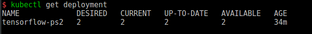
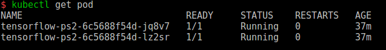
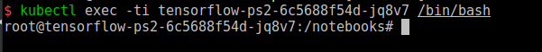
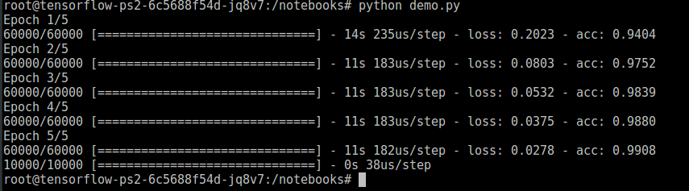

Kubernetes中运行tensorflow
经过测试，目前搭建的Kubernetes测试集群已经可以运行tensorflow深度学习框架，本文档主要为总结运行测试过程及测试结果。关于Kunernetes集群环境搭建在此不做详细描述。
部署tensorflow
根据Kubernetes相关要求，tensorflow作为Deployment部署在集群环境中，并且本次测试tensorflow框架为CPU版本，关于GPU版本的测试，以后再做相关测试。Kubernetes已经可以支持tensorflow并行训练，在并行训练时，tensorflow容器分别配置为ps服务器及worker服务器，进行部署。
首先，需要编写Deployment相关配置文件，文件格式推荐使用yaml，也可以使用json格式编写，随后我会提供简单的yaml2json工具，方便将yaml格式文件转化为json格式，配置文件如下：
1 | apiVersion: extensions/v1beta1 |
这里的部署选择的是tensorflow官方提供的latest-py3版本的框架。在Kubernetes集群的Master节点上使用kubectl applf -f tensorflow.yml。
完成后，使用kubectl get deployment查看部署的Deployment信息，输出结果如下：
状态AVAILABLE下数量与Deployment配置文件中replicas数量一直，说明部署正常。
使用kubectl get pod命令查看部署的Pod:
部署的两个Pod都处于Running状态，表明容器运行正常。
选择一个Pod名称，然后进入到容器内部，使用kubectl exec -ti tensorflow-ps2-6c5688f54d-jq8v7 /bin/bash:
由于pod中网络使用的是Kubernetes组件中coreDNS和kube-dns提供的DNS解析服务，连接外部网络存在问题，这里可以在Deployment的配置文件中进行修改，为了完成测试，这里做一个临时配置方案，修改容器中/etc/resolv.conf文件，将namserver修改为8.8.8.8，然后修改apt的源为国内源，完成后，安装一些简单的工具：
1 | apt-get update && apt-get upgrade |
上述步骤完成后，使用tensorflow官方提供的脚本对tensorflow框架进行测试，脚本内容如下：
1 | import tensorflow as tf |
调用脚本后，输出结果如下：
完成上述步骤，证明kubernetes集群中运行tensorflow框架是可行的，关于GPU的调度，在最新版本的kubernetes中已提供支持，另外，共享存储等功能也可以集成在集群中，这部分功能暂时没有做过研究，后续会继续深入研究相关问题。
kubernetes官方提供的kubeflow是一个专门针对深度学习任务的集群插件，该插件功能暂时没有研究，根据描述，其设计思路与传统方案无太大异常，主要是提供了更为便捷的API以供使用。